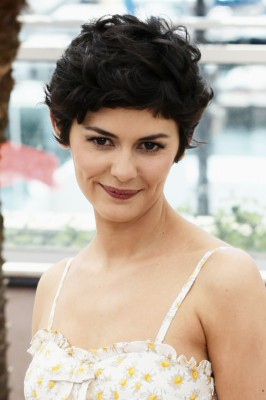
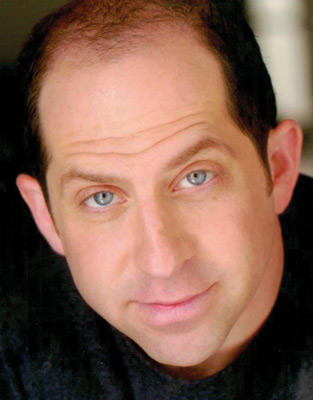
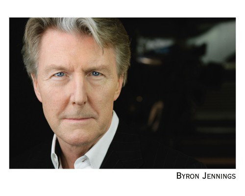
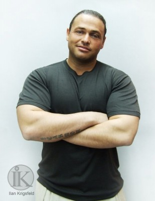

#1097 L'Auberge espagnole 3 - Beziehungsweise New York

 IMDB-Wertung: 7.0 / 10
IMDB-Wertung: 7.0 / 10  Metascore: 64
Metascore: 64 
Von einem Tag auf den anderen steht Xaviers Leben auf dem Kopf. Als seine Frau Wendy ihm verkündet mit den beiden Kinder nach New York zu gehen, beschließt er Hals über Kopf ebenfalls in die Metropole zu ziehen, um seinen Kindern nahe zu sein. So nimmt Xaviers Abenteuer seinen Lauf: Er heiratet eine Amerikanerin chinesischer Herkunft, um die Aufenthaltspapiere zu bekommen; er spendet seinen Samen für das Kind eines lesbischen Pärchens und der Turbulenzen nicht genug, besucht ihn auch noch seine erste große Liebe, Martine...
Jahr: 2013
Dauer: 117 Minuten
FSK: 6
Land: Frankreich Studio: StudioCanalTonspuren:
Untertitel: Deutsch,
Auflösung: 1080p (1920x1040) Größe: 9123 MB
Genre: Komödie, Drama, Liebe
Regisseur: Cédric Klapisch
Drehbuch: Cédric Klapisch
Soundtrack: Christophe Minck
Darsteller:
 Romain Duris als Xavier Rousseau
Romain Duris als Xavier Rousseau-  Audrey Tautou als Martine
 Cécile De France als Isabelle
Cécile De France als Isabelle Kelly Reilly als Wendy
Kelly Reilly als Wendy Sandrine Holt als Ju
Sandrine Holt als Ju Jochen Hägele als Hegel et Schopenhauer - les philosophes allemands
Jochen Hägele als Hegel et Schopenhauer - les philosophes allemands- Benoît Jacquot als Monsieur Rousseau - le père de Xavier
 Li Jun Li als Nancy
Li Jun Li als Nancy Sharrieff Pugh als Ray
Sharrieff Pugh als Ray Peter McRobbie als L'agent bureau immigration
Peter McRobbie als L'agent bureau immigration-  Jason Kravits als L'avocat de Xavier
-  Byron Jennings als L'avocat de Wendy
 Peter Hermann als John
Peter Hermann als John- Alison Arboux als La première collégienne
- Natalia Segura als La femme sensuelle
 Zinedine Soualem als M. Boubakeur - le voisin
Zinedine Soualem als M. Boubakeur - le voisin- Kyan Khojandi als Antoine Garceau
 Xavier Alcan als L'associé de l'éditeur
Xavier Alcan als L'associé de l'éditeur- Maud Wyler als L'assistante de l'éditeur
 Adrian Martinez als Le patron coursier
Adrian Martinez als Le patron coursier- Shuya Chang als Ming Li
 Phil Nee als Le chauffeur de taxi chinois
Phil Nee als Le chauffeur de taxi chinois Larry Fessenden als Le premier rocker
Larry Fessenden als Le premier rocker Kenneth Maharaj als Le chauffeur de taxi indien
Kenneth Maharaj als Le chauffeur de taxi indien Cédric Klapisch als Le photographe
Cédric Klapisch als Le photographe Dominic Colón als Carlos Fernandez
Dominic Colón als Carlos Fernandez- Ryiah Rene Suazo als Kayla
- Allen Lewis Rickman als L'homme yiddish
- Dylan Chalfy als Le père en colère
- J.D. Williams als Le barman
- Luis Vega als Le mari latino
- Celia Au als Une skater
- Alex Kruz als Le deuxième mari Latino
- Alexander Jameson als City Hall Wedding Guest
- Mia Sinclair Jenness als Hasidic Daughter
-  Ilan Krigsfeld als Le premier fuyard
- Stephen Lin als Un messager à vélo
- Niyi Oni als Sammie
- Anna Rapp als La fille hassidique
- Tyler Rapp als Le fils hassidique
- Andrew Alberson als Le garçon d'honneur branché , uncredited
- Josh Bodenhamer als Le skateboarder pro , uncredited
- Brady Bryson als Le garçon dans le métro , uncredited
- Ismael Peter Casillas III als Le skateboarder cool et coloré , uncredited
- Robert Chang als Un garçon d'honneur , uncredited
- Onika Day als Une agent de l'INS , uncredited
- Doug Drucker als Le premier tatoué dans la parade , uncredited
- Efraiem Hanna als Un cadre de Wall Street , uncredited
- John Jillard Sr. als Le deuxième tatoué dans la parade , uncredited
 Sergio Kato als Le deuxième fuyard , uncredited
Sergio Kato als Le deuxième fuyard , uncredited
Datei: X:\3-Trilogie(G-M)\L'Auberge Espagnole\L'Auberge espagnole 3 - Beziehungsweise New York (2013, FSK6, 1920x1040).mkv seit 20.05.2015
Festplatte: HD Collection-2(A-Z)-3(A-M)
 Alle Filme aus Gruppe '3-Trilogie(G-M)\L'Auberge Espagnole'
Alle Filme aus Gruppe '3-Trilogie(G-M)\L'Auberge Espagnole'